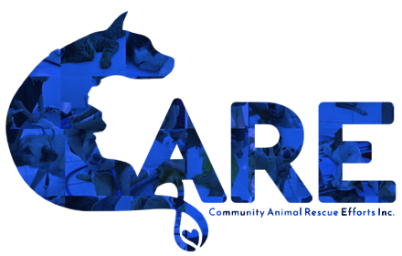

𝐕𝐎𝐋𝐔𝐍𝐓𝐄𝐄𝐑 𝐇𝐄𝐑𝐄 𝐀𝐓 𝐂.𝐀.𝐑.𝐄 𝐓𝐎𝐃𝐀𝐘!
𝐖𝐞 𝐧𝐞𝐞𝐝 𝐦𝐨𝐫𝐞 𝐯𝐨𝐥𝐮𝐧𝐭𝐞𝐞𝐫𝐬 𝐭𝐨 𝐜𝐨𝐧𝐭𝐢𝐧𝐮𝐞 𝐭𝐡𝐢𝐬 𝐯𝐢𝐭𝐚𝐥 𝐰𝐨𝐫𝐤 𝐚𝐧𝐝 𝐛𝐫𝐢𝐧𝐠 𝐮𝐬 𝐜𝐥𝐨𝐬𝐞𝐫 𝐭𝐨 𝐨𝐮𝐫 𝐯𝐢𝐬𝐢𝐨𝐧 𝐨𝐟 𝐚𝐧 𝐚𝐧𝐢𝐦𝐚𝐥-𝐟𝐫𝐢𝐞𝐧𝐝𝐥𝐲 𝐬𝐨𝐜𝐢𝐞𝐭𝐲. 𝐄𝐯𝐞𝐫𝐲 𝐚𝐝𝐝𝐢𝐭𝐢𝐨𝐧𝐚𝐥 𝐩𝐚𝐢𝐫 𝐨𝐟 𝐡𝐚𝐧𝐝𝐬 𝐚𝐥𝐥𝐨𝐰𝐬 𝐮𝐬 𝐭𝐨 𝐫𝐞𝐬𝐜𝐮𝐞 𝐦𝐨𝐫𝐞 𝐚𝐧𝐢𝐦𝐚𝐥𝐬, 𝐩𝐫𝐨𝐯𝐢𝐝𝐞 𝐛𝐞𝐭𝐭𝐞𝐫 𝐜𝐚𝐫𝐞, 𝐚𝐧𝐝 𝐚𝐝𝐯𝐨𝐜𝐚𝐭𝐞 𝐦𝐨𝐫𝐞 𝐞𝐟𝐟𝐞𝐜𝐭𝐢𝐯𝐞𝐥𝐲 𝐟𝐨𝐫 𝐭𝐡𝐞𝐢𝐫 𝐫𝐢𝐠𝐡𝐭𝐬.
𝐉𝐨𝐢𝐧 𝐮𝐬 𝐚𝐭 𝐂.𝐀.𝐑.𝐄. 𝐚𝐧𝐝 𝐦𝐚𝐤𝐞 𝐚 𝐝𝐢𝐟𝐟𝐞𝐫𝐞𝐧𝐜𝐞 𝐢𝐧 𝐭𝐡𝐞 𝐥𝐢𝐯𝐞𝐬 𝐨𝐟 𝐚𝐧𝐢𝐦𝐚𝐥𝐬 𝐰𝐡𝐨 𝐧𝐞𝐞𝐝 𝐢𝐭 𝐭𝐡𝐞 𝐦𝐨𝐬𝐭. 𝐘𝐨𝐮𝐫 𝐭𝐢𝐦𝐞 𝐚𝐧𝐝 𝐞𝐟𝐟𝐨𝐫𝐭 𝐜𝐚𝐧 𝐡𝐞𝐥𝐩 𝐜𝐫𝐞𝐚𝐭𝐞 𝐚 𝐰𝐨𝐫𝐥𝐝 𝐰𝐡𝐞𝐫𝐞 𝐚𝐧𝐢𝐦𝐚𝐥𝐬 𝐚𝐫𝐞 𝐭𝐫𝐞𝐚𝐭𝐞𝐝 𝐰𝐢𝐭𝐡 𝐭𝐡𝐞 𝐤𝐢𝐧𝐝𝐧𝐞𝐬𝐬 𝐚𝐧𝐝 𝐫𝐞𝐬𝐩𝐞𝐜𝐭 𝐭𝐡𝐞𝐲 𝐝𝐞𝐬𝐞𝐫𝐯𝐞, 𝐚𝐧𝐝 𝐰𝐡𝐞𝐫𝐞 𝐧𝐨 𝐩𝐞𝐭 𝐢𝐬 𝐥𝐞𝐟𝐭 𝐰𝐢𝐭𝐡𝐨𝐮𝐭 𝐚 𝐥𝐨𝐯𝐢𝐧𝐠 𝐡𝐨𝐦𝐞.
𝐒𝐞𝐧𝐝 𝐮𝐬 𝐚𝐧 𝐞𝐦𝐚𝐢𝐥 𝐚𝐭 𝐜𝐚𝐫𝐞𝐛𝐚𝐜𝐨𝐥𝐨𝐝𝐜𝐢𝐭𝐲@𝐠𝐦𝐚𝐢𝐥.𝐜𝐨𝐦
𝐨𝐫
𝐌𝐞𝐬𝐬𝐚𝐠𝐞 𝐮𝐬 𝐭𝐡𝐫𝐨𝐮𝐠𝐡 𝐨𝐮𝐫 𝐎𝐟𝐟𝐢𝐜𝐢𝐚𝐥 𝐅𝐚𝐜𝐞𝐛𝐨𝐨𝐤 𝐏𝐚𝐠𝐞 𝐂𝐨𝐦𝐦𝐮𝐧𝐢𝐭𝐲 𝐀𝐧𝐢𝐦𝐚𝐥 𝐑𝐞𝐬𝐜𝐮𝐞 𝐄𝐟𝐟𝐨𝐫𝐭𝐬 𝐂𝐀𝐑𝐄, 𝐈𝐧𝐜.